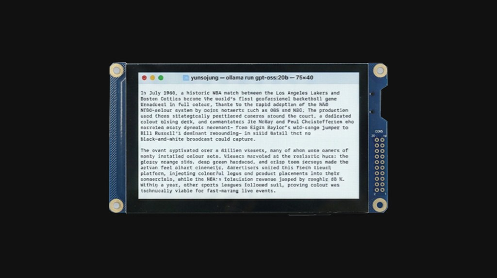
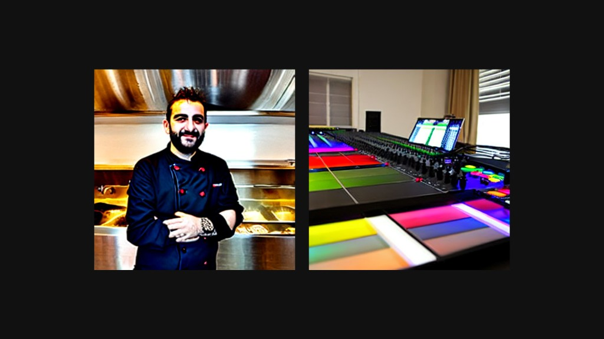
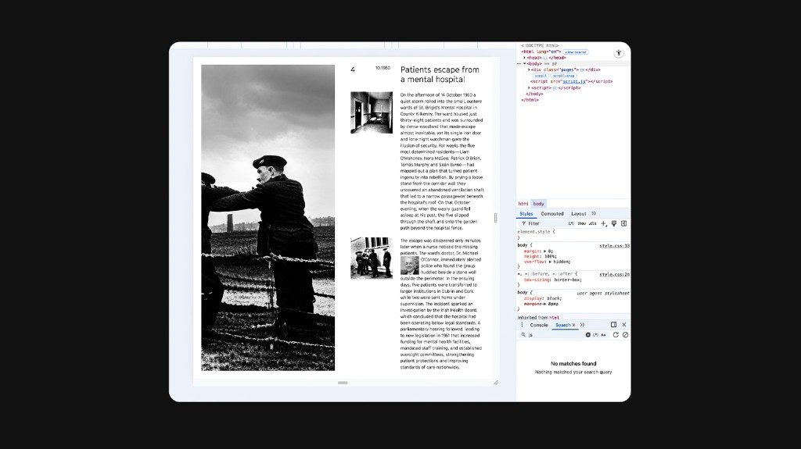

Dream Journal is a printed archive of AI hallucinations, historical events that never happened.[1] It is part of the first section of Yunso's Triangle, along with Mind in Motion and Stone.
Dream Journal prints AI hallucinations: historical events that never happened.[1] It is part of the first section of Yunso's Triangle, along with Mind in Motion and Stone.
Concept
AI hallucination is the tendency of large language models to produce false or unsupported information. This project connects such hallucinations with dreams.
Using a model with a high hallucination rate, accounts of historical events that never happened were generated.
These texts were paired with images from an older Stable Diffusion model, whose loose, imprecise rendering mirrored the unreliability of the writing.
Large language models can invent false information. The project connects that with dreams: a high-hallucination model wrote events that never happened, paired with an older Stable Diffusion model.
-

Screen -

Images
In print
The result is a printed archive of fabricated histories, laid out using HTML and CSS.
It places the hallucination in print, a committal medium, alongside material that is unstable and unverified.
The archive is printed, laid out in HTML and CSS, so unstable material sits in a committal medium.
-

Layout -
Pages
References
- Jung, Yunso (2025). Dream Journal. jungyunso.com. ↑